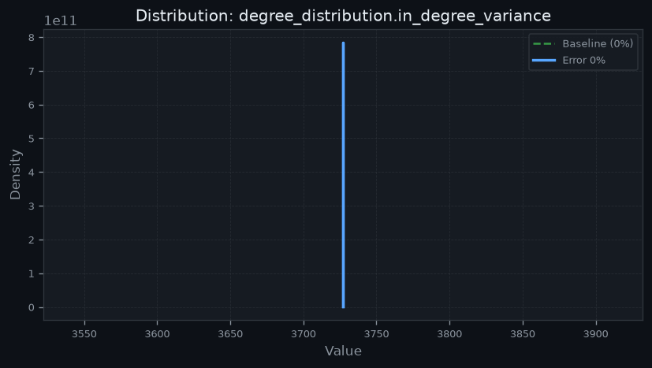
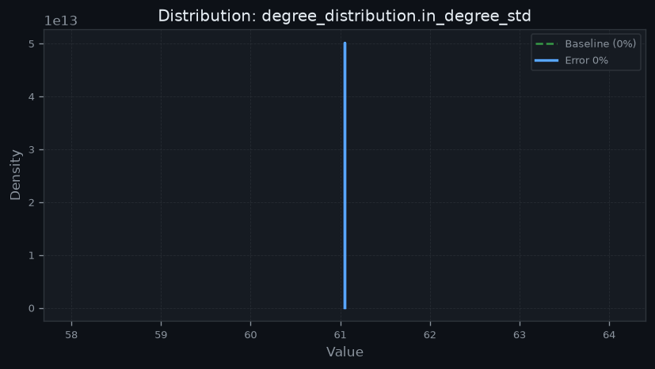
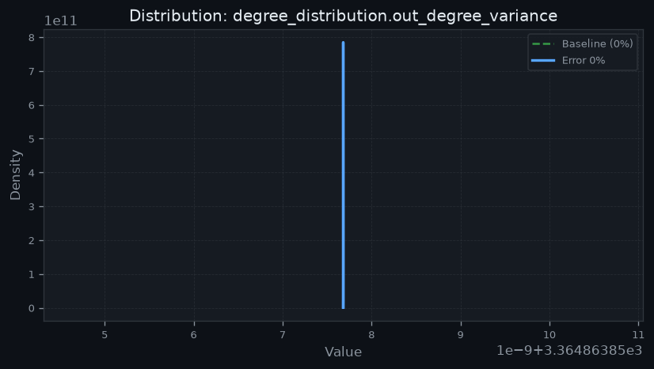
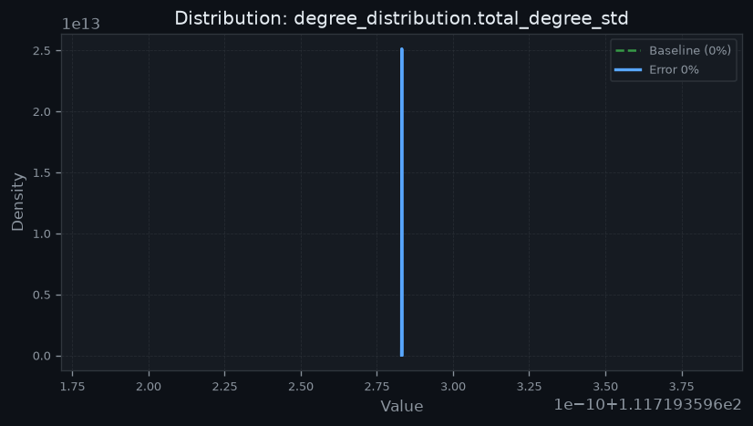
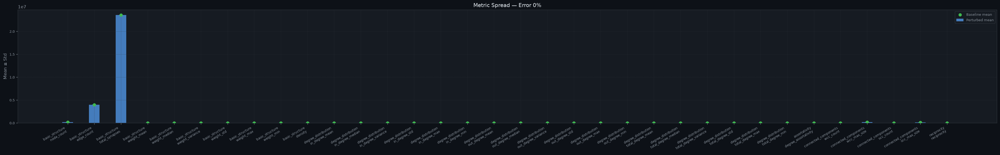

False Synapses · 5 trial(s) · 9 metric(s) · Baseline: 0%
| Dataset | BANC |
| Error Model | False Synapses |
| Error Rate | 0% |
| Trials | 5 |
| Metrics | 9 |
| Generated | 2026-08-01 04:16 UTC |
| Integrity Score | 100.00% |
| Verdict | 🟢 Structurally Preserved |
Metrics where higher values indicate better biological preservation. Preservation % = (perturbed / baseline) × 100, clamped to 0–100%.
| Metric | Baseline | Perturbed | Δ% | Std | 95% CI | Preservation (%) | Status |
|---|---|---|---|---|---|---|---|
| Node Count | 158262 | 158262 | +0.0000% | 0 | [158262, 158262] | 🟢 Preserved | |
| Edge Count | 3.99004e+06 | 3.99004e+06 | +0.0000% | 0 | [3.99004e+06, 3.99004e+06] | 🟢 Preserved | |
| Total Synapses | 2.35562e+07 | 2.35562e+07 | +0.0000% | 0 | [2.35562e+07, 2.35562e+07] | 🟢 Preserved | |
| Density | 0.000159304 | 0.000159304 | +0.0000% | 0 | [0.000159304, 0.000159304] | 🟢 Preserved | |
| Largest WCC | 153952 | 153952 | +0.0000% | 0 | [153952, 153952] | 🟢 Preserved | |
| Largest SCC | 139405 | 139405 | +0.0000% | 0 | [139405, 139405] | 🟢 Preserved | |
| Reciprocity | 0.129939 | 0.129939 | +0.0000% | 0 | [0.129939, 0.129939] | 🟢 Preserved |
These metrics describe structural re-organization rather than preservation. The change magnitude and direction are reported instead of a preservation percentage.
| Metric | Baseline | Perturbed | Δ% | Std | 95% CI | Interpretation |
|---|---|---|---|---|---|---|
| WCC Count | 4306 | 4306 | +0.0000% | 0 | [4306, 4306] | Minimal decrease in component count (+0.0000%) |
| SCC Count | 18345 | 18345 | +0.0000% | 0 | [18345, 18345] | Minimal decrease in strongly connected components (+0.0000%) |




